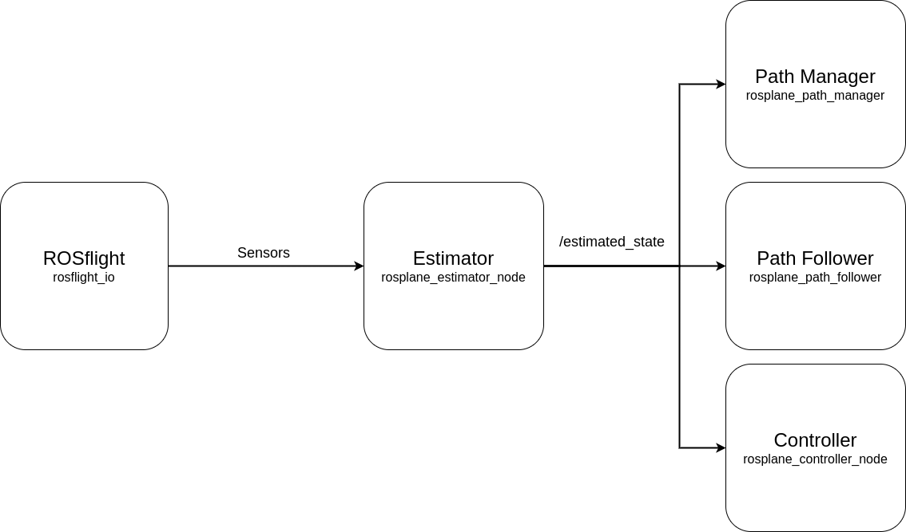
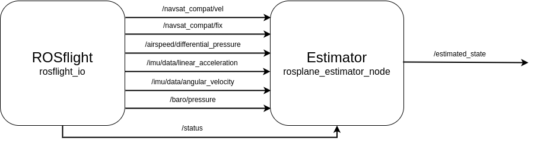

Estimator Overview¶
Overview¶
The estimator is a continuous-discrete Kalman Filter, a full treatment of the filter is found in section 8.5 of the UAV book. This filter essentially works by inverting a few sensor models and then using a two stage estimation of first the attitude and then the position state values. This page will outline the states, their meaning and any general notes on the states. For a more in depth look at which states are estimated in which way visit the Estimator Base and Estimator Example pages.
ROS Interactions¶
The estimator takes in sensor information from rosflight_io computes an estimate and publishes it to the rest of ROSplane.
|  |
|---|
| Figure 1: ROS network interactions for the estimator. |
{kind=link}
Input¶
The inputs to the estimator are, accelerometer, rate gyro, barometer, differential pressure, GPS position, and GPS velocity estimates. The table with the topic for each of the measures is below.
| Measure | Explanation | Topic |
|---|---|---|
| Accelerometer | This measures the specfic force applied to the aircraft in the body frame axes (see section 7.1 in the UAV book for more details). | /imu/data/linear_acceleration |
| Rate Gyro | This measures the angular velocity of the aircraft around the body frame axes. | /imu/data/angular_velocity |
| Barometer | The barometer measures the ambient air pressure. It is calibrated on arm to establish a "zero" altitude measurement. | /baro/pressure |
| Differential Pressure | The differential pressure sensor, measures the difference in pressure using a pitot tube due to forward velocity. | /airspeed/differential_pressure |
| GNSS Position | GNSS postion gives the position of the aircraft in latitude, longitude and altitude. | /navsat_compat/fix |
| GNSS Velocity | GNSS velocity gives the velocity of the aircraft in meters per second in the global NED frame. | /navsat_compat/vel |
| Status | Indicates whether the aircraft is armed (indicating a need to initialize position and altitude estimates). | /status |
These topics provide the measures that are fused to create a state estimate.
|  |
|---|
| Figure 1: ROS topic subscriptions and publications for the estimator. |
{kind=link}
Output¶
There are 20 states estimated by the estimator that are published to the rest of ROSplane.
These states cover the position, orientation and aerodynamic information for the aircraft.
Below is a table of the /estimated_state message and what each of the fields represents.
Note that there are more than 20 states listed in the following table, but this is because either Euler angles or quaternions can be used to express orientation.
See the Frames and Derivation page for more information, or chapter 2 of the UAV book.
| State | Explanation | Range/Type/Units |
|---|---|---|
| postion[3] | A 3 vector of the NED position of the aircraft. | (-\infty , \infty) (float)(meters) |
| va | The airspeed of the aircraft. Always positive because it is the magnitude. | (0 , \infty) (float)(meters/second) |
| alpha | The angle of attack of the aircraft wing. | (-\pi, \pi) (float)(radians) |
| beta | The side-slip angle of the aircraft. | (-\pi, \pi) (float)(radians) |
| phi | The roll angle of the aircraft. | (-\pi, \pi) (float)(radians) |
| theta | The pitch angle of the aircraft. | (-\pi, \pi) (float)(radians) |
| psi | The yaw angle of the aircraft. | (-\pi, \pi) (float)(radians) |
| chi | The course angle of the aircraft. | (-\pi, \pi) (float)(radians) |
| u | The velocity in the body x axis. | (-\infty, \infty) (float)(meters/second) |
| v | The velocity in the body y axis. | (-\infty, \infty) (float)(meters/second) |
| w | The velocity in the body z axis. | (-\infty, \infty) (float)(meters/second) |
| p | The angular velocity about the body x axis (rollrate). | (-\infty, \infty) (float)(radians/second) |
| q | The angular velocity about the body y axis (pitchrate). | (-\infty, \infty) (float)(radians/second) |
| r | The angular velocity about the body z axis (yawrate). | (-\infty, \infty) (float)(radians/second) |
| vg | The groundspeed of the aircraft. Always positive because it is the magnitude. | (0 , \infty) (float)(meters/second) |
| wn | The global north velocity of the wind. | (-\infty , \infty) (float)(meters/second) |
| we | The global east velocity of the wind. | (-\infty , \infty) (float)(meters/second) |
| _ | The following entries are optional. | _ |
| quat[4] | A 4 vector of the quaternion describing the orientation. | (-1 , 1) (float) |
| quat_valid | A flag indicating whether the data in the quat entry is valid. | True/False (bool) |
| psi_deg | The yaw angle of the aircraft in degrees. | (-180, 180) (float)(degrees) |
| chi_deg | The course angle of the aircraft in degrees. | (-180, 180) (float)(degrees) |
| init_lat | The latitude of the aircraft when first armed. | (-90, 90) (float)(DDS) |
| init_long | The longitude of the aircraft when first armed. | (-180, 180) (float)(DDS) |
| init_alt | The altitude of the aircraft when first armed. | (0, \infty) (float)(meters) |
Note
More states may be estimated in the estimator than listed, these states are just those useful to other parts of ROSplane.
Running the Estimator¶
The estimator is in the main rosplane ROS package.
The ROS executable is estimator, yielding the run command:
ros2 run rosplane estimator
To pass a set of parameters for the controller from a yaml file using the --ros-args option.
ros2 run rosplane estimator --ros-args --params-file path/to/params.yaml
Note
Filepaths will need to be altered to work.
Note
The most common way of running the estimator is through a launch file with the rest of the ROSplane pipeline running as well. See the ROSplane Overview in the Developer and User Guides for more details.